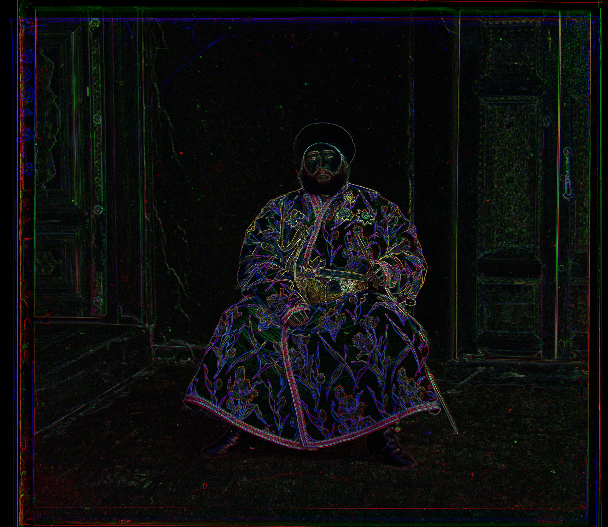

Welcome to My CS180 Project 1 Portfolio!
Sergei Mikhailovich Prokudin-Gorskii's pictures
Prokudin-Gorskii has produced pictures through BGR filters (in order). This project tries to build colorful images which Prokudin-Gorskii did not have the chance to print.
Part 1: Exhaustive search
Part 2: Pyramid search (and self-select images)
Part 3 (Bells and Whistles) cv.sobel on Emir
Part 3: Emir
Emir is a special case. The pyramid search did not work well on this image. That's because The Emir's blue jacket captures a lof of light in the blue channel but not so much in the green and red channels What work previously does not work now. My approach is to use Sobel operator on the original raw image first and then try to use pyramid method to align the Sobel'ed image.
Pyramid-aligned Emir. Displacement: G: [49 24] Displacement: R: [ 104 -154]
After I apply cv.sobel to emir image and align the sobel images, I get this

With the offsets from the sobel images, I can now apply the offsets to the original image.
 Sobel-aligned Emir. Displacement: G: [49 23] Displacement: R: [107 40]
Sobel-aligned Emir. Displacement: G: [49 23] Displacement: R: [107 40]